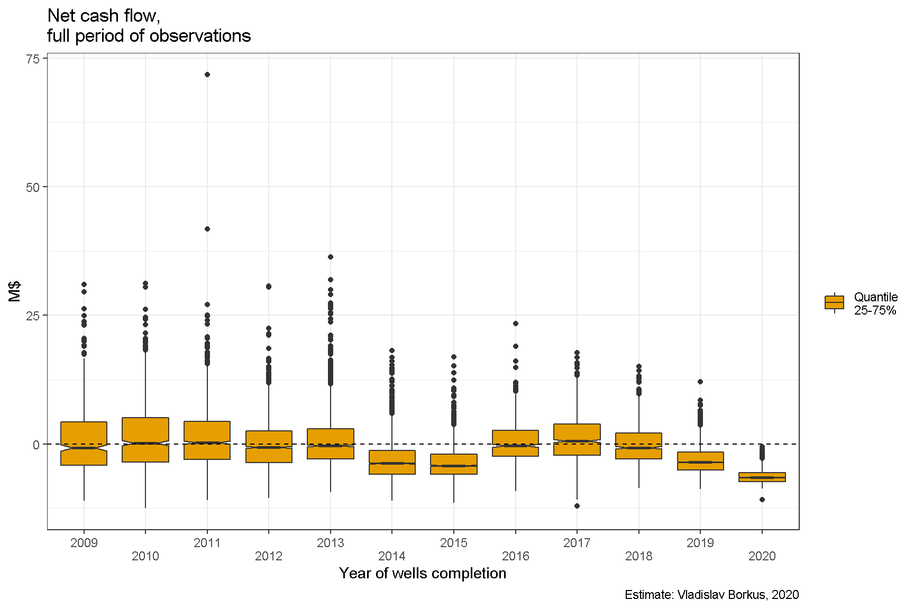
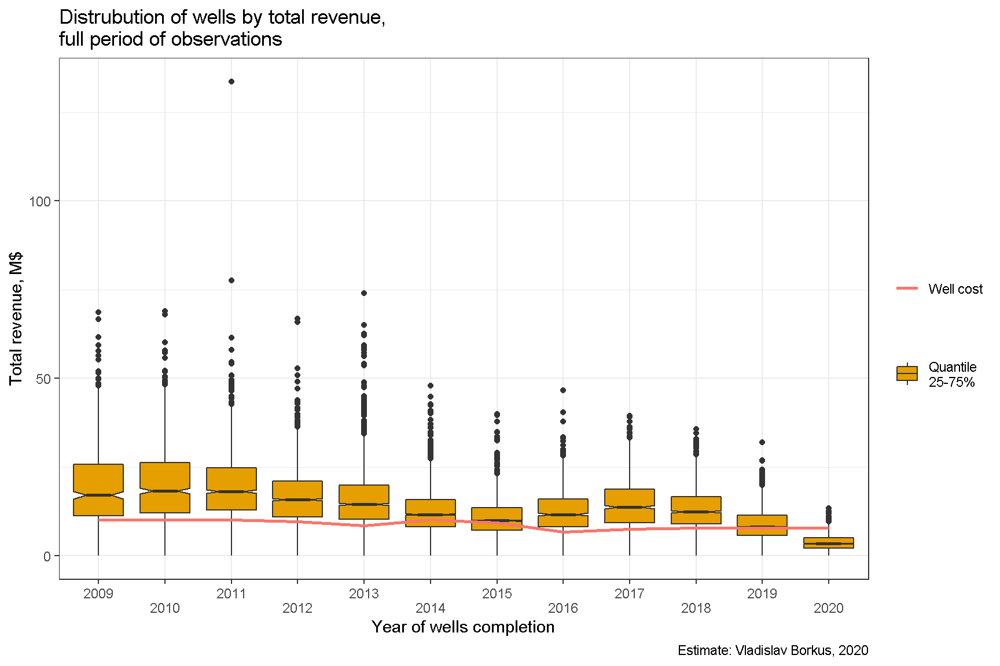

Распределение NPV скважин
Ниже приведены диаграммы распределения NPV. Очевидно, что намеченных показателей окупаемости достигли на сегодняшний момент менее половины скважин, завершенных в периоды 2009-2013. Скважины, открытые после удешевления нефти 2014-2015, оказываются далеки от окупаемости в 3/4 случаев, а вот проектов 2016-2017 года, достигших положительного NPV, уже заметно выше.1 Скважины 2019-2020 гг. окупаемости не достигли по очевидной причине - срок их работы пока слишком мал, приведены они просто для иллюстрации тренда.


Более того, оказывается, что в примерно половине проектов 2009-2013 гг. инвесторы не получили даже номинальный денежный доход, т. е. доход без расходов на заемные средства (дисконтирования).

И хуже того - даже просто выручка, без учета затрат на текущее обслуживание, налоги и лицензионные платежи, смогла покрыть первоначальные затраты только для 3/4 скважин.
Половина скважин, например 2009 года завершения, принесла выручку в размере от одного до двух с половиной стоимости скважины. Однако, из этой суммы 18% ушло на лицензионные платежи, 10% в виде налога штата, около 10% ушло на обслуживание и административные расходы. В сумме это почти 40% от номинальной выручки.

Есть несколько возможных причин наблюдаемой низкой доходности/убыточности:
Слишком оптимистичные ожидания цены нефти в 2009-2014 гг.
Слишком оптимистичные ожидания дебитов скважин в 2009-2014 гг. Более-менее надежно находить “хорошие” места научились только в последние несколько лет.
Слишком высокие налоги и лицензионные платежи для данной доходности бизнеса.
Вклад ценового фактора можно приблизительно подсчитать, вычислив цену, необходимую для достижения положительного NPV при фактически полученных дебитах. Сделать это можно в разных предположениях:
Доход от продажи газа и налоги на него принимаются как они были, т. е. предполагается, что цена газа больше зависела от баланса спроса и предложения, чем от цены нефти;
Доход от продажи газа и налоги на него принимаются пропорциональными цене нефти.
Хотя оба этих предположения - сильные упрощения, но для более чем 95% скважин разница между результатами, получаемыми такими способами, составляет менее 15%.
Для достижения окупаемости при ставке дисконтирования DR=5% для 75% скважин потребовалась бы стабильная цена в нефти Северной Дакоте выше $60 ($70 WTI), а для 25-30% - выше $100 ($100 WTI) (при расчетах выручка по методу 1). Иными словами даже если бы цена на нефть сохранилась на уровне $100 WTI, то заметное число скважин “первой волны” принесло бы инвесторам убыток.